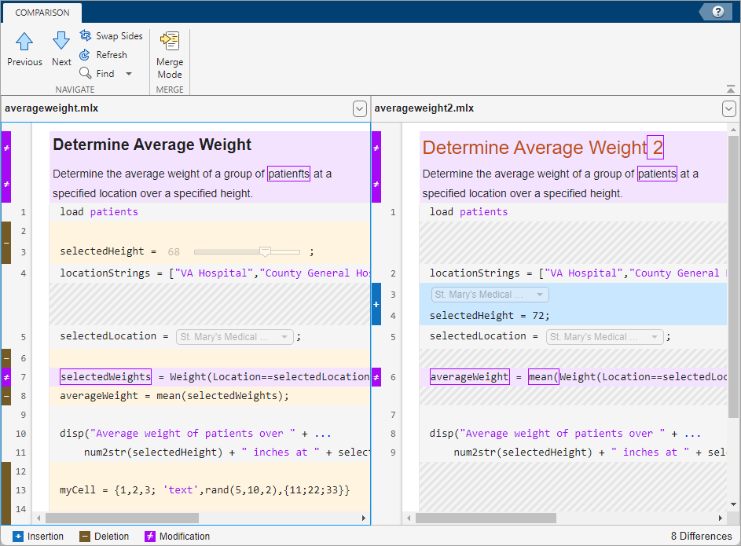
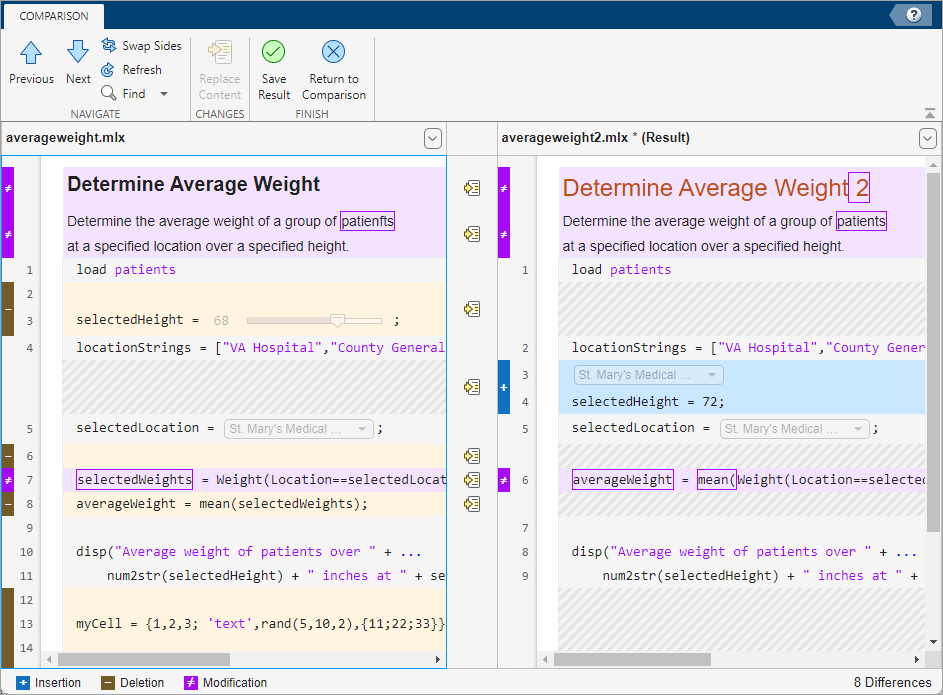

Compare and Merge Live Scripts and Functions
You can compare two live code files and merge changes between one file and another using the Comparison Tool. The Comparison Tool highlights differences in code, text, and text formatting.
You can compare live scripts saved using the
binary Live Code file format (.mlx) and live scripts saved using the
plain text Live Code file format (.m). To compare live scripts saved
using the plain text Live Code file format (.m) as plain text, use
the visdiff function with the
"text" comparison type. (since R2025a)
Select Files to Compare
There are multiple ways to select two files and start the Comparison Tool:
Live Editor — With a live code file open in the Live Editor, go to the Live Editor tab and, in the File section, select Compare > Compare To. Then, select the file you want to compare the open file to.
Files panel — Select a live code file, right-click, and select Compare To. Then, select the file you want to compare the selected file to.
Command Window — Use the
visdifffunction. For example, to compare the two filesaverageweight.mlxandaverageweight2.mlxusing thevisdifffunction, typevisdiff('averageweight.mlx','averageweight2.mlx').
The Comparison Tool compares the selected files and highlights the differences.
Explore Differences
When you compare live code files, a new window opens and displays the two files
side by side. For example, suppose that you have two files,
averageweight.mlx and averageweight2.mlx,
with several differences. When you compare the two files, the Comparison Tool
highlights the differences.

When comparing live code files, the Comparison Tool highlights differences in code, text, and text formatting. The Comparison Tool ignores output, even if the file contains saved output. If the tool detects a difference within an equation, image, or control, the entire item is highlighted. The Comparison Tool displays the total number of differences in the bottom-right corner of the comparison report, and highlights the lines that do not match using the colors listed in this table.
| Highlight Color | Description |
|---|---|
| Purple | The line contains differences. |
| Dark purple | The boxed text is different. |
| Blue | The line exists only in the right file. This can happen when the line is inserted in the right file, or when it is deleted from the left file. The corresponding line in the left file is highlighted using a gray striped pattern. |
| Yellow | The line exists only in the left file. This can happen when the line is inserted in the left file, or when it is deleted from the right file. The corresponding line in the right file is highlighted using a gray striped pattern. |
The Comparison Tool attempts to match lines and detects code and text that is
added, deleted, or changed. For example, in the live code comparison of
averageweight.mlx and averageweight2.mlx,
the tool determines that lines 2 and 3 in averageweight.mlx do
not exist in averageweight2.mlx and highlights them in yellow.
Also, the tool takes the additional lines into account and determines that the line
containing the disp statement in each file matches, even though
the disp statement does not occur on the same line number.
To step through the results one difference at a time, use the Previous and Next buttons.
For information about how to configure the comparison report, see Compare Files and Folders and Merge Files.
Merge Changes
When comparing live code files, you can merge changes from one file to the other. Merging changes can be useful when resolving conflicts between different versions of files. You only can merge from left to right. If you want to merge into the left file, click the Swap Sides button before you start merging. Clicking the Swap Sides button reverts any merges already made and creates a new comparison report for the original files.
To begin merging, on the Comparison tab, click the Merge Mode button. Then, to replace content from the right pane with content from the left pane, click the button located next to the line you want to merge. You also can select a difference and, in the Comparison tab, click the Replace Content button.
The right pane contains the merged result. An asterisk next to the merged file
name in the right pane (averageweight2.mlx *) indicates that the
file contains unsaved changes.

To undo a replacement, click the Undo button between the modified lines or on the Comparison tab. To revert all merges and start again, click the Refresh button. You also can click the Refresh button to update the comparison report after making changes to and saving the files in the Live Editor. Refreshing discards all unsaved merged changes.
To save your changes and return to the comparison report, click the Save Result button. To return to the comparison report without saving changes, click the Return to Comparison button.